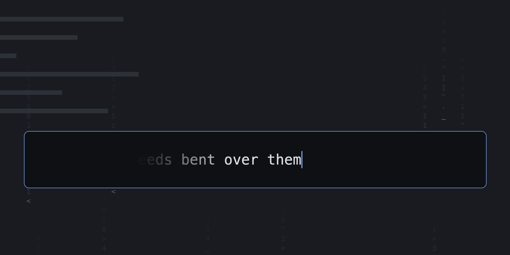
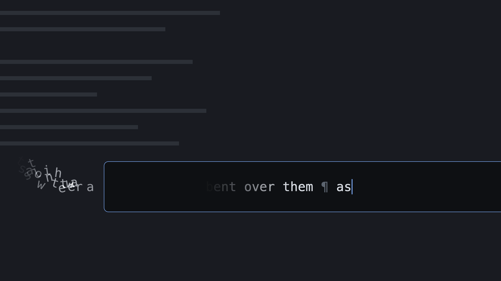
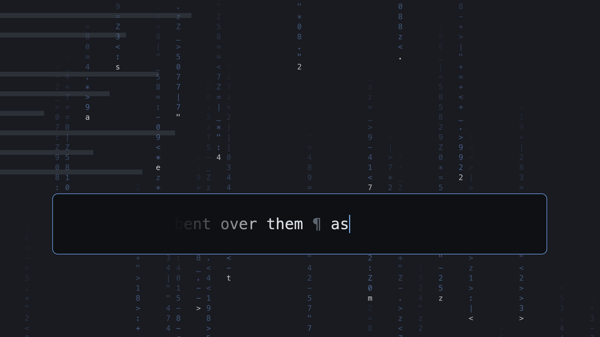
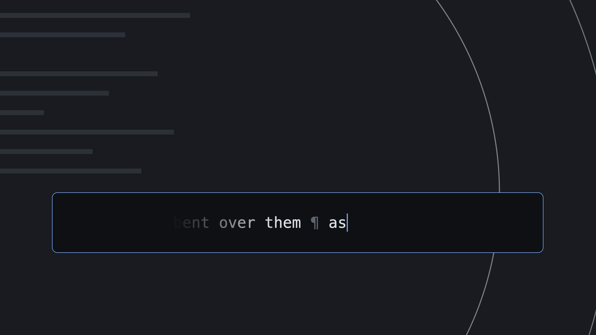
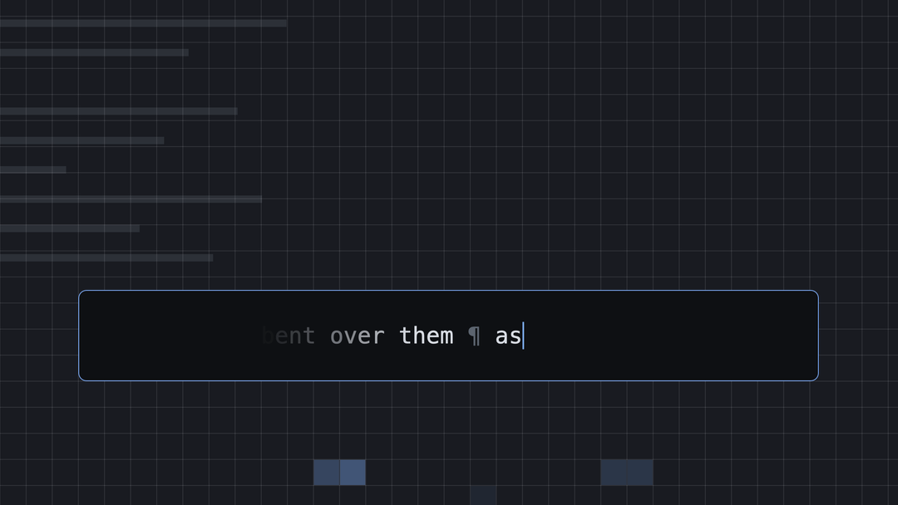

Write a thought down in one go, without rereading it.
Summon it over any app with ⌃⌥Space, write forward while the text glides past the caret, and ⌘⏎ puts it into that app.
Get it on GitHubmacOS 14 or later, build it yourself for now.

Click into the box to write your own; ⏎ sends it.
- ⌃⌥Space summons the box over the app you are in.
- ⌘⏎ pastes into the app behind; it needs the Accessibility permission, for the paste only.
- ⌘⇧⏎ copies, ⌘S saves, Esc hides.
- Every key is kept in an encrypted journal on your Mac until the text has gone out.
- A click per key from four sound packs, or off; an ambience on the dim, or off.
- Nothing leaves your Mac: no network, no account, no telemetry.
Ambience




Optional, on the dim while you write: Drift, Rain, Rings or Grid, or off.